Добро пожаловать в мою галерею! Welcome to my gallery!
Меня зовут Асем Ыскак, и я — художница и фэшн иллюстратор. В моем портфолио есть сотрудничество с такими брендами, как Max Mara, Tiffany, Интертоп, Topstretching и другими. Я участвовала на различных выставках, мои иллюстрации печатались в глянцевых журналах.
Мой главный источник вдохновения — это женщины и их внутренний мир.
My name is Assem Yskak, and I am an artist and fashion illustrator. My portfolio includes collaborations with brands such as Max Mara, Tiffany, Intertop, Topstretching, and others. I have participated in various exhibitions, my illustrations have been printed in magazines.
My main source of inspiration is women and their inner world.
Проект «Имена» — это моя личная исследовательская работа, в которой я вместе с моими Instagram подписчицами исследую казахские женские имена. Мы все индивидуальны, но какая-та схожесть и влияние имени на человека меня порой удивляет. Анализируя смысл и характер каждого имени я создаю уникальные образы (аватары) для девушек. Каждый аватар сочетает в себе традиционные элементы с современным стилем.
Через мои именные аватары я стремлюсь показать счастливых женщин, чувствующих любовь. Чтобы женщина ассоциируя себя с именем, укрепляла бы свою собственную ценность и любовь к себе.
Проект продолжается. Каждую неделю я дополняю его новым именем.
The "Names" project is my personal research in which I, along with my Instagram followers, explore Kazakh women's names. We are all individual, but sometimes I am amazed by some similarity and the influence of a name on a person. By analyzing the meaning and character of each name I create unique avatars for women. Each avatar combines traditional elements with a modern style.
Through my name avatars, I strive to depict happy women who feel loved. So that a woman, associating herself with a name, would reinforce her own worth and love for herself.
The project continues. Every week I update it with a new name.
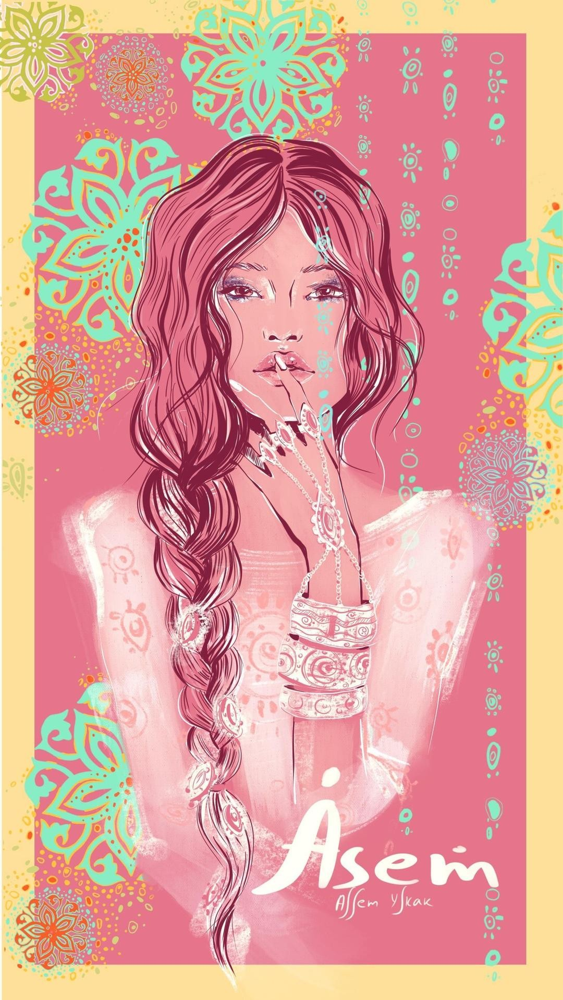
Аватар «Әсем»
В переводе с казахского означает "Красивая".
Она:
Часто круглолицая, с пухлыми губами, пышные (кудрявые), непослушные волосы, часто высокие, с хорошей фигурой и светлой кожей.
По характеру — добрые, нежные, спокойные, внимательные, чуткие, любят смеяться, шутить, свободолюбивые, независимые, заботливые, преданные, умеют искренне дружить. С виду сильные, но в душе ранимые и очень чувствительные.
Әсем — творческие девушки, со способностями к живописи и к рукоделию. Любят мечтать, придумывать и создавать что-то новое.
Она гармонично красивая как внутри, так и снаружи.
Avatar «Assem»
In translation from Kazakh means "Beautiful".
She is:
Often round-faced, with plump lips, lush (curly), unruly hair, often tall, with a good figure and fair skin.
In character — kind, gentle, calm, attentive, sensitive, love to laugh, joke, freedom-loving, independent, caring, devoted, can be sincerely friendly. They appear strong, but are vulnerable and very sensitive at heart.
Assem — creative girls, with talents for painting and handicrafts. They love to dream, invent and create something new.
She is harmoniously beautiful both inside and out.
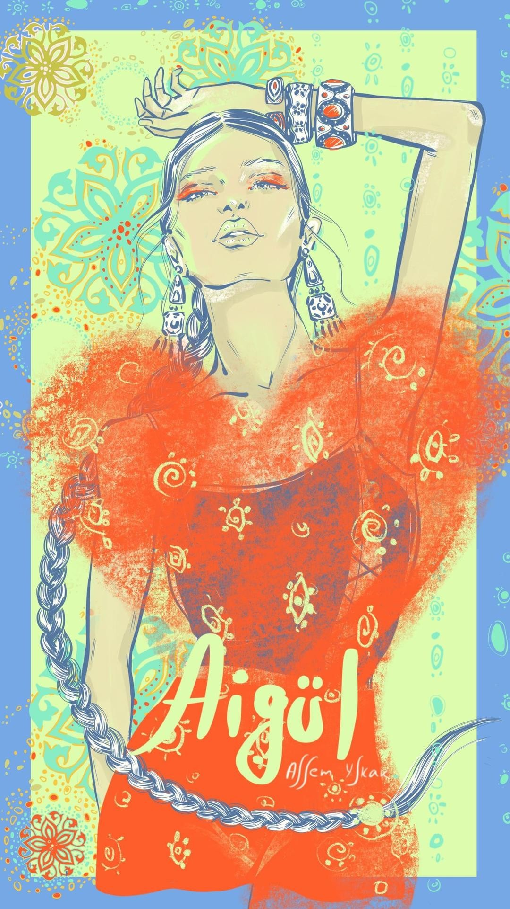
Аватар «Айгүл»
В переводе с казахского «Айгүл» означает «Лунный цветок».
Она:
Добрая, мудрая, жизнерадостная, честная, душевная, веселая, великодушная, позитивная, всегда улыбается, сопереживающая, чувствительная, ранимая, поддержит словом и делом, талантливая, интересно все что касается души и энергии, добросовестная, а также беспощадная к врагам
По внешности были разные описания ( но общее это — высокие и статные, большие круглые глаза, гордый, прямой взгляд и позитивное настроение, которое излучает все ее лицо.
Avatar «Aigul»
In translation from Kazakh «Aigul» means «Moon Flower».
She is:
Kind, wise, joyful, honest, heartfelt, cheerful, generous, positive, always smiling, sympathetic, sensitive, vulnerable, supports with words and actions, talented, interested in everything related to the soul and energy, conscientious, and also ruthless to enemies.
There were different descriptions for appearance (but what's common is — tall and majestic, large round eyes, proud, straight gaze and positive mood, which radiates her entire face.
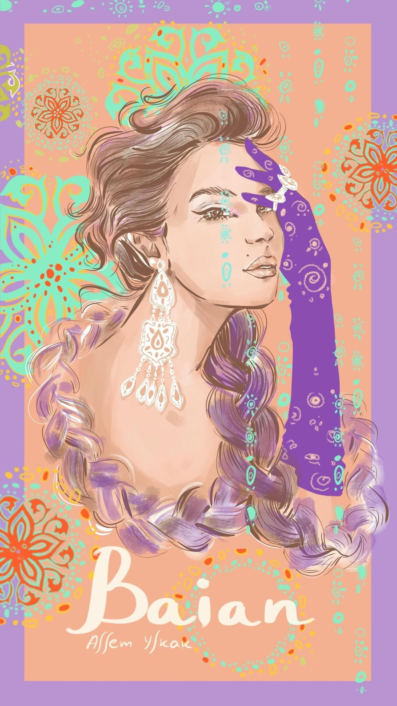
Аватар «Баян»
Исторически это имя тюркского происхождения. На казахском языке означает как «счастливая, могучая, богатая». Персонаж «Баян сулу» в казахском эпосе является как символ любви и красоты.
Она:
Очень добрая, спокойная, мудрая, искренняя, очень заботливая, серьезная, рассудительная, трудолюбивая, дерзкая, честная, с сильным властным характером, упертая, упрямая, целеустремленная, любит тусить, шутить и быть в обществе, заниматься большими проектами.
По внешности из общих черт это: родинка над губой и изящные, тонкие черты лица, прямой нос.
Avatar «Baian»
Historically, this name is of Turkic origin. In the Kazakh language, it means «happy, powerful, wealthy». The character «Baian sulu» in Kazakh epics is a symbol of love and beauty.
She is:
Very kind, calm, wise, sincere, very caring, serious, thoughtful, hardworking, audacious, honest, with a strong authoritative character, stubborn, persistent, goal-oriented, loves to hang out, joke around and socialize, involved in large projects.
In terms of appearance, the common features are: a mole above the lip and graceful, delicate facial features, a straight nose.

Аватар «Динара»
Имя арабского происхождения, означает «драгоценная, дорогая»
Она:
Добрая, позитивная, шустрая, отзывчивая, целеустремленная, дерзкая, мудрая, любит шутить и разряжать обстановку, у нее классное чувство юмора. Коммуникабельная, много друзей и связей, потенциал к лидерству, умеет отстаивать свою точку зрения, хороший организатор, отличное чувство вкуса и стиля, любит порядок и системность, для нее очень важно материальное благополучие.
Из отличительных черт с детства любит делать все сама, быстрая смена настроения и особенная обаятельность.
Avatar «Dinara»
The name is of Arab origin, it means «precious, dear»
She is:
Kind, positive, brisk, responsive, goal-oriented, audacious, wise, loves to joke and lighten the mood, she has a great sense of humor. Communicative, has many friends and connections, potential for leadership, can defend her point of view, a good organizer, has an excellent sense of taste and style, loves order and systematic approach, material well-being is very important for her.
Distinctive features from childhood include a love for doing everything herself, rapid mood swings, and a unique charm.
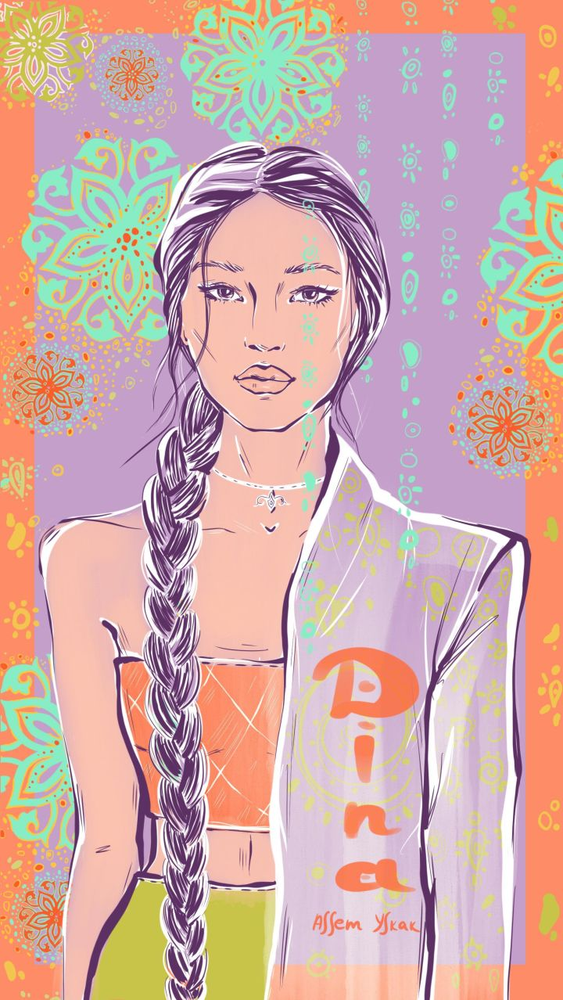
Аватар «Дина»
Имя арабского происхождения. Означает «верная». Верна себе и своим любимым.
Она:
Красивая, изящная, утонченная, нежная, обаятельная и артистичная. Справедливая, умная, целеустремленная, практичная и трудолюбивая. Любит чистоту, порядок, организованность. Считает, что всегда права, прямая. На работе ее уважают, она является одной из авторитетной личностью.
Внешне строгая, недоступная и сильная, но внутри ранимая, с тонкой душевной организацией. Творческая, любознательная, очень любит читать, ее талант обычно раскрывается в гуманитарных науках связанные с языками и текстом. Любит красиво одеваться и выделяться. Особенная любовь к красивой обуви.
Отличительные черты: Ее невозможно не заметить. В компании она будет самой яркой, харизматичной и коммуникабельной.
Avatar «Dina»
The name is of Arab origin. It means «faithful». Faithful to herself and her loved ones.
She is:
Beautiful, graceful, refined, gentle, charming, and artistic. Fair, smart, goal-oriented, practical, and hardworking. Loves cleanliness, order, and organization. Always considers herself right, straightforward. She's respected at work, seen as an authoritative figure.
Appears strict, unapproachable, and strong on the outside, but vulnerable inside, with a sensitive soul. Creative, curious, very fond of reading, her talent usually unfolds in humanities related to languages and text. Loves to dress stylishly and stand out. Has a particular love for beautiful shoes.
Distinctive features: It's impossible not to notice her. In a company, she will be the most bright, charismatic, and communicative.
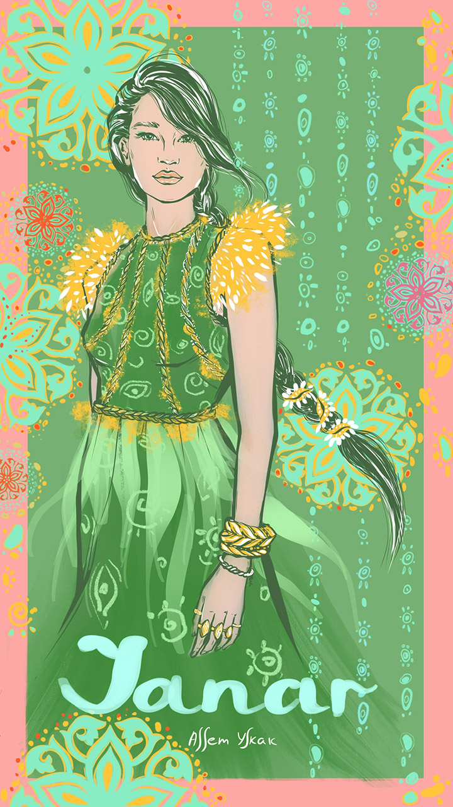
Аватар «Жанар»
В переводе с казахского языка означает «блеск в глазах», «чтобы глаза блестели, и сама сияла как солнце». С тюркского «жаны ар» — значит, чтобы была чистой душой, и могла возрождаться как птица Феникс.
Она:
Обоятельная, шустрая, веселая, общительная, амбициозная, энергичная, легкая, добрая, надежная и страстная. У нее сильный, волевой характер. Старательная и трудолюбивая. Мудрая и смелая. Оратор от природы. Острая на язык, но из-за яркого чувства юмора никто на нее не обидится.
Отличительные черты: Особый огонь в глазах, громкий голос, крепкое телосложение и взрывной темперамент. Она будет участвовать во всех мероприятиях, с ней всегда весело и комфортно.
Avatar «Zhanar»
In translation from Kazakh language, it means «glitter in the eyes», «for eyes to shine, and she shines like the sun». From Turkic «zhany ar» — means to have a pure soul, and could be reborn like a Phoenix.
She is:
Charming, brisk, cheerful, sociable, ambitious, energetic, easygoing, kind, reliable, and passionate. She has a strong, willful character. Diligent and hardworking. Wise and bold. An orator by nature. Sharp-tongued, but no one takes offense at her due to her bright sense of humor.
Distinctive features: A special fire in the eyes, a loud voice, a strong physique, and an explosive temperament. She will participate in all events, it's always fun and comfortable with her.
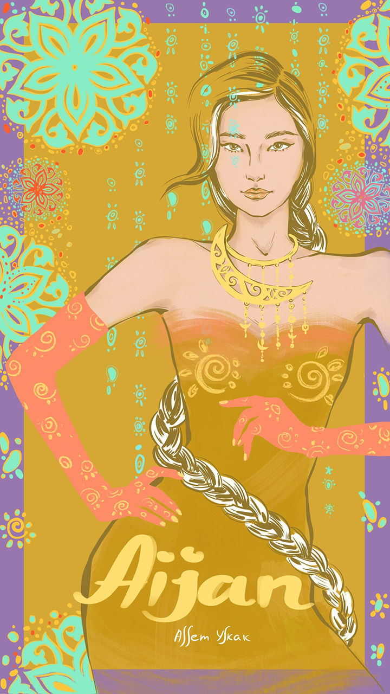
Аватар «Айжан»
В переводе с казахского языка означает «лунная душа» или «душа луны».
Она:
Веселая, общительная, добрая, шустрая, активная, импульсивная, самодостаточная, дерзкая и энергичная. Оптимистка по жизни. Грациозная и харизматичная. Любит проявлять заботу. У нее прекрасное чувство стиля и креатива. Часто очень творческие, нежные натуры. При этом уверенные в себе, свободные, любят достигать, ставить цели. Про нее говорят, что она со стержнем внутри, сильна духом и волевой характер.
Отличительные черты: врожденная сильная интуиция, разносторонность и эмпатичность к чувствам людей.
Avatar «Aijan»
In translation from the Kazakh language, it means «moon soul» or «soul of the moon».
She is:
Cheerful, sociable, kind, nimble, active, impulsive, self-sufficient, daring, and energetic. Optimist in life. Graceful and charismatic. Loves to show care. She has a great sense of style and creativity. Often very creative, gentle natures. At the same time, they are confident, free, love to achieve, set goals. It is said about her that she has a core inside, is strong in spirit, and has a willful character.
Distinctive features: innate strong intuition, versatility, and empathy for people's feelings.

Аватар «Меруерт»
В переводе с казахского языка означает «жемчуг» или «жемчужная».
Она:
Красивая, добрая, отзывчивая, ответственная, заботливая, упорная и трудолюбивая. Милая и улыбчивая. Утонченная и нежная, при этом со стержнем внутри. Открытая и душевная. Спокойная и рассудительная, любит размеренную, комфортную жизнь. Благодаря своей продуманности и практичности умеет достигать своих целей. Любит наслаждаться жизнью и красотой вокруг. Меруерт обладает богатым воображением, эмпатией и альтруизмом.
Отличительные черты: у Мерует часто большие, глубокие глаза и неиссякаемый оптимизм.
Avatar «Meruert»
In translation from the Kazakh language, it means «pearl» or «pearly».
She is:
Beautiful, kind, responsive, responsible, caring, persistent, and hardworking. Cute and smiling. Refined and gentle, yet with a spine inside. Open and heartfelt. Calm and thoughtful, loves a measured, comfortable life. Thanks to her thoughtfulness and practicality, she knows how to achieve her goals. Loves to enjoy life and beauty around. Meruert possesses rich imagination, empathy, and altruism.
Distinctive features: Meruert often has large, deep eyes and inexhaustible optimism.
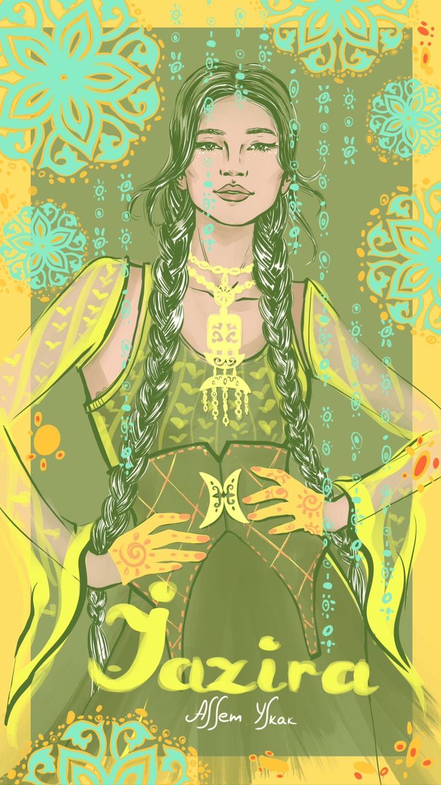
Аватар «Жазира»
В переводе с казахского языка переводится как «широкая, цветущая степь».
Она:
Красивая, веселая, жизнерадостная, добрая, коммуникабельная и харизматичная. Жазира легко заводит новые знакомства, поэтому у нее много друзей и связей. Хорошо получается работать в команде. Рядом с ней легко и комфортно. У нее хорошее чувство юмора. Жазира целеустремленная и практичная, идет к своим мечтам спокойно и уверенно. Ценит комфорт и уют дома, для нее важна материальная обеспеченность.
Отличительные черты: Жазира обладает особой притягательностью и обаянием. У Жазиры часто ямочки на щеках. Люди тянутся к ней, любят с ней общаться и ходить к ней в гости. Она самая гостеприимная хозяйка.
Avatar «Jazira»
In translation from the Kazakh language, it means «wide, blooming steppe».
She is:
Beautiful, cheerful, joyful, kind, communicative, and charismatic. Jazira easily makes new acquaintances, so she has many friends and connections. She is good at working in a team. It's easy and comfortable to be around her. She has a good sense of humor. Jazira is goal-oriented and practical, goes towards her dreams calmly and confidently. Values comfort and cosiness at home, material security is important for her.
Distinctive features: Jazira has a special attraction and charm. Jazira often has dimples on her cheeks. People are drawn to her, love to talk to her and visit her. She is the most hospitable host.
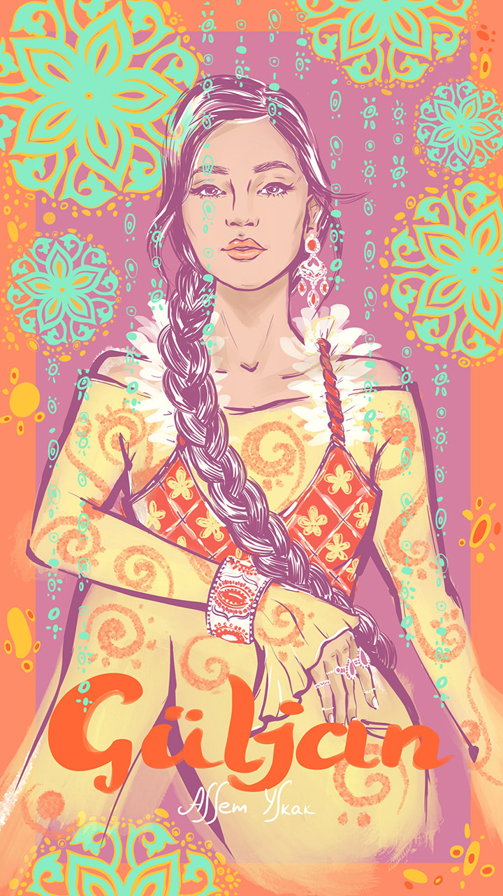
Аватар «Гүлжан»
В переводе с казахского языка означает «Душа цветка» или «Душа, которая цветет».
Она:
Позитивная, добрая, активная, щедрая и отзывчивая. У нее острый ум и лидерские способности. С виду серьезная и сильная, но внутри ранимая и нежная. Трудоголик, упорно и терпеливо идет к своим целям. Любит доводить дела до конца. Много учится, путешествует, развивается. Надежная, все продумывают до мелочей, любит порядок и системность. Часто занимает высокие должности.
Отличительные черты: Ее искренняя прямолинейность. Она всегда знает чего хочет и не изменяет своим принципам.
Avatar “Guljan”
Translated from Kazakh, the name means “Soul of the flower” or “A soul that blossoms”.
She is:
Positive, kind, active, generous, and sympathetic. She has a sharp mind and leadership abilities. Serious and strong on the outside, but vulnerable and tender on the inside. A workaholic who persistently and patiently moves towards her goals. She loves to bring affairs to an end. She studies a lot, travels, and evolves. Dependable, meticulous about all the details, loves order and systemic work. Often holds high positions.
Distinguishing features: Her sincere directness. She always knows what she wants and never changes her principles.
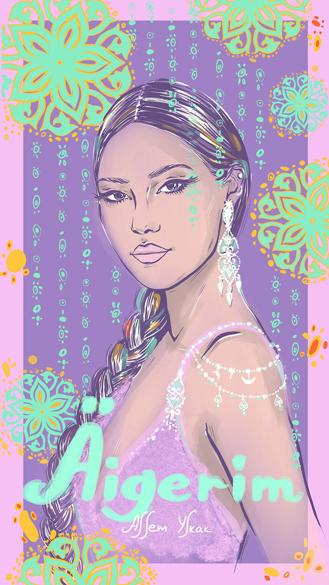
Аватар «Әйгерім»
В переводе с казахского языка переводится как «Луналикая красавица»
Она:
Уверенная в себе красавица, знающая себе цену и верная своим убеждениям. Целеустремленная, активная, умная, самостоятельная, находчивая и любознательная. Женственная, нежная и улыбчивая. Любит развиваться, учиться, познавать новое. Она душа компании. Любит выступать, быть в центре внимания. Әйгерім притягивает людей своей легкостью, живостью и добротой. Стремится к самовыражению, легко генерирует новые идеи и умеет их воплощать.
Отличительные черты: Әйгерім часто обладает мягким,задорным и звонким голосом и грамотной речью. Люди симпатизируют ей. Часто успешные, публичные и самодостаточные личности.
Avatar “Aigerim”
Translated from Kazakh, it means “Moon-faced beauty”.
She is:
A confident beauty, who knows her worth and remains true to her beliefs. Goal-oriented, active, smart, independent, resourceful, and curious. Feminine, tender and always smiling. She loves self-development, learning new things and is the life of any company. She enjoys being in spotlight. Aigerim attracts people with her ease, vitality and kindness. She seeks to self-express, easily generates new ideas and knows how to implement them.
Distinguishing features: Aigerim often has a soft, playful, and ringing voice along with articulate speech. People sympathize with her. She is often a successful, public, and self-sufficient personality.

Аватар «Айдана»
В переводе с казахского языка означает «мудрая как Луна»
Она:
Яркая, умная, честная, жизнерадостная, храбрая и сильная духом. Она уверенна в себе, обладает лидерскими качествами. Айдана — творческая личность, у нее прекрасное чувство стиля и вкуса. Она умеет находить красоту в мелочах и видеть глубину в обыденных вещах. Также она обладает хорошей интуицией и чувством юмора. Общительный, интеллигентный и интересный собеседник. Любит познавать новое, развиваться, анализировать, добиваться своих целей. Любит быть в уединении и находить свои ответы слушая интуицию и внутренний голос.
Отличительные черты: В ней одновременно сочетаются нежность и сила, творчество с аналитическим мышление.
Avatar “Aidana”
Translated from Kazakh, it means “As wise as the Moon”.
She is:
Bright, intelligent, honest, joyful, brave, and strong in spirit. She is confident and demonstrates leadership qualities. Aidana is a creative individual with a wonderful sense of style and taste. She knows how to find beauty in the smallest things and see depth in ordinary things. She also possesses a strong intuition and a sense of humor. She's communicative, intellectual, and an interesting conversationalist. She loves to learn new things, develop, analyze, and achieve her goals. She enjoys solitude and finds her answers by listening to her intuition and inner voice.
Distinguishing features: She combines gentleness and strength, creativity with analytical thinking simultaneously.

Аватар «Раушан»
С казахского языка переводится как название цветка «Роза»
Она:
Добрая, яркая, заботливая, ласковая, честная и общительная. Веселая в компании, энергичная, стремительная, и организованная на работе. Обладает лидерскими качествами. Сильная, целеустремленная и упрямая. При этом она вдумчивая, спокойная, умиротворенная, нежная и хрупкая. Про нее говорят «всегда на позитиве», даже когда на душе не так. Раушан очень редко делится своими проблемами и переживаниями. Ценит дружбу и своих людей. Ее вдохновляет и наполняет красота, искусство, мода.
Отличительные черты: Ее врожденное королевское благородство, тонкий вкус и чувство стиля присущий только ей.
Avatar “Raushan”
Translated from Kazakh, it corresponds to the name of the flower “Rose”.
She is:
Kind, vivid, caring, tender, honest, and sociable. She is cheerful in company, energetic, rapid, and organized at work. Demonstrates leadership qualities. Strong, goal-oriented, and stubborn. Yet she is thoughtful, calm, tranquil, tender, and fragile. People often say that she is "always positive", even when she is not feeling too happy. Raushan rarely shares her problems and concerns. She appreciates friendship and values her people. She finds inspiration and fulfillment in beauty, art, and fashion.
Distinguishing features: Her inherent regal nobility, delicate taste, and sense of style unique to her.
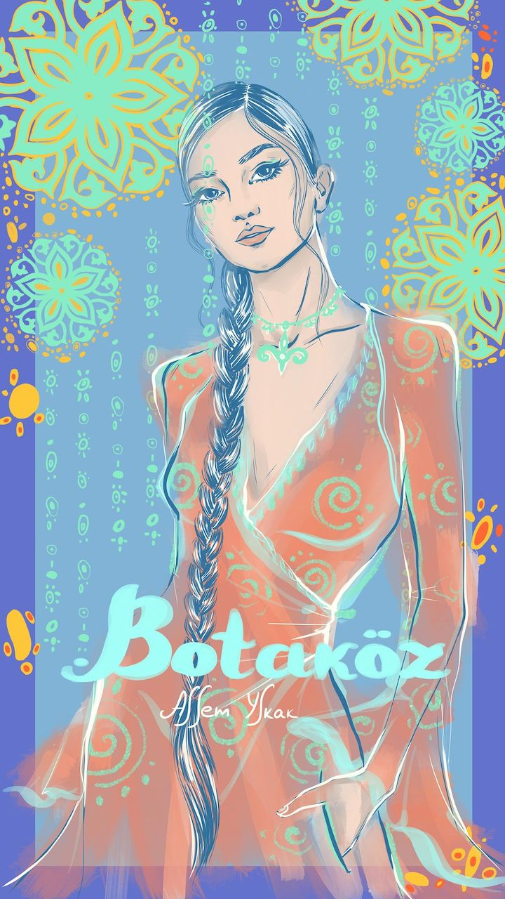
Аватар «Ботакөз»
С казахского языка переводится как «большие глаза, как у верблюжонка»
Она:
Добрая, улыбчивая, отзывчивая, позитивная, веселая, душевная и искренняя. Красивая и утонченная. При этом стойкая, упрямая и сильная. Она ответственная, трудолюбивая, целеустремленная, любит доводить дела до конца. Ценит свою самостоятельность и независимость. У нее высокая интуиция и чувствительность, из-за этого она порой часто ранима. Ботакөз — творческая, любознательная личность. У нее много интересов, любит читать и познавать новое. Легко находит общий язык со всеми.
Отличительные черты: У Ботакөз яркая внешность и часто большие, миндалевидные глаза с длинными ресницами. У нее особая любовь к животным и домашним питомцам.
Avatar “Botakoz”
Translated from Kazakh, it corresponds to “big eyes, like a camel calf's”.
She is:
Kind, smiling, responsive, positive, joyful, warm-hearted, and sincere. Beautiful and delicate. Yet she is resilient, stubborn, and strong. She is responsible, hardworking, goal-oriented, and devoted to completing tasks. She values her independence and self-reliance. She has a high level of intuition and sensitivity, which sometimes makes her vulnerable. Botakoz is a creative and curious personality. She has many interests, loves to read, and discover new things. She easily finds a common language with everyone.
Distinguishing features: Botakoz has a bright appearance and often large, almond-shaped eyes with long lashes. She has a special love for animals and pets.
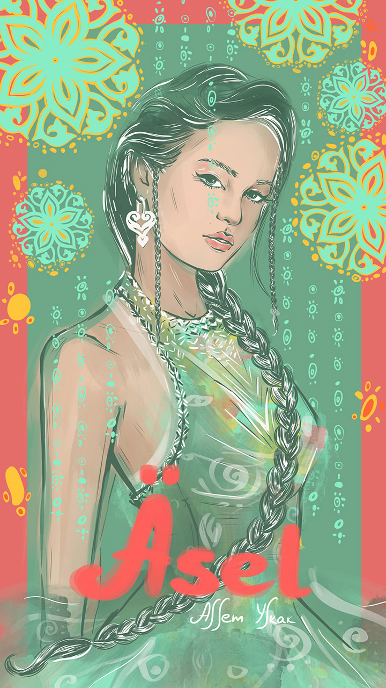
Аватар «Әсел»
Казахское имя «Әсел» имеет арабские корни, означает «медовая», «сладкая как мёд».
Она:
нежная, искренняя, добрая, честная, общительная, легкая и романтичная. Веселая и жизнерадостная. Ранимая, мягкая, чувствительная, но стойкая и сильная. Отзывчивая, заботливая, сострадательная, тактичная, хороший друг и собеседник. Умеет ставить себе задачи и достигать поставленных целей. Обладает аналитическими способностями, острым умом, проницательностью и сильным чувством ответственности.
Отличительные черты: Ее природное нежное очарование. Әсел часто имеет ямочки на щеках или родинки на лице и над губой.
Avatar “Asel”
The Kazakh name “Әсел” has Arabic roots and means “honey”, “sweet as honey”.
She is:
Tender, sincere, kind, honest, sociable, easy-going, and romantic. Happy and cheerful. Vulnerable, gentle, sensitive, yet resilient and strong. Responsive, caring, compassionate, tactful, a good friend, and conversationalist. Skilled in setting goals and achieving them. She possesses analytical abilities, sharp mind, insight, and a strong sense of responsibility.
Distinguishing features: Her natural tender charm. Asel often has dimples on her cheeks or moles on her face and over her lip.
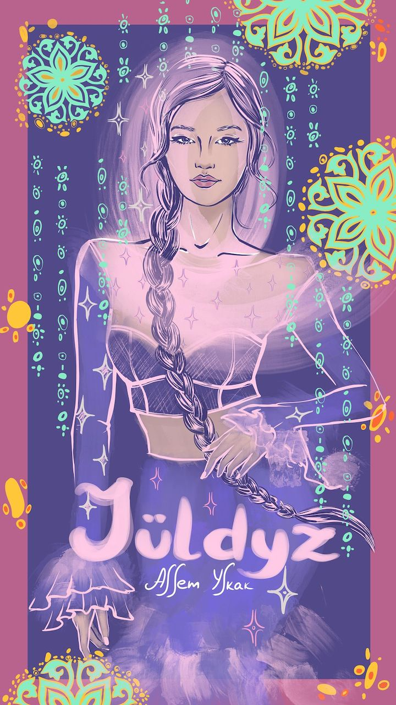
Аватар «Жұлдыз»
С казахского языка переводится как «звезда», «светящаяся».
Она:
Яркая, обаятельная, улыбчивая, самодостаточная и уверенная в себе. Смело идет по жизни и достигает своих целей. Надежная, трудолюбивая, волевая и решительная. Для нее очень важны семейные ценности и ее близкие. Хозяйственная, практичная, часто любит готовить и рукодельничать, создавать уют и комфорт дома. Яркий борец за справедливость. Среди своих знакомых и на работе пользуется авторитетом и уважением.
Отличительные черты: Ее не возможно не заметить. Жұлдыз покоряет сердца людей своей харизмой, громким голосом и лучезарной внешностью.
Avatar “Juldyz”
Translated from Kazakh, it means as “star”, “shining”.
She is:
Bright, charming, smiling, self-sufficient, and confident. She bravely walks through life and achieves her goals. Reliable, hardworking, determined, and decisive. Family values and relatives are very important to her. Economical, practical, often loves cooking and doing handcrafts, creating comfort at home. A strong defender of justice. Among her acquaintances and at work, she enjoys authority and respect.
Distinguishing features: It is impossible not to notice her. Juldyz wins people's hearts with her charisma, loud voice, and radiant appearance.
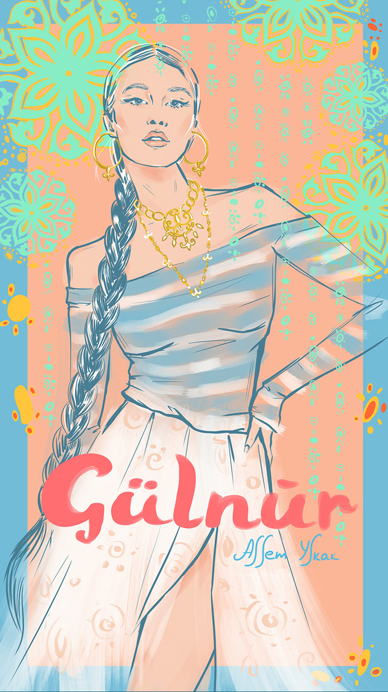
Аватар «Гүлнұр»
Имя образована из двух слов «гүл — цветок» и «нұр — свет, луч». С казахского языка переводится как «свет цветка», «лучезарная как цветок».
Она:
Обаятельная, нежная, добрая, спокойная, уравновешенная, и жизнерадостная. При этом Гүлнұр независимая, самостоятельная, волевая, ответственная, активная и сильная личность. Она легко идет на контакт, у нее много подруг и нужных связей. Деятельная, предприимчивая, умеет быстро анализировать и принимать решения. Стремится к новым знаниям, любит путешествовать, ходить на экскурсии и деловые встречи.
Отличительные черты: С Гүлнұр всегда надежно. Она может тактично решить любые вопросы. Ярко выраженные лидерские и организаторские качества.
Avatar “Gulnur”
The name is formed from two words, “gul — flower” and “nur — light, beam”. Translated from Kazakh, it means “light of the flower”, “luminous as a flower”.
She is:
Charming, tender, kind, calm, balanced, and cheerful. Yet Gulnur is independent, self-reliant, strong-willed, responsible, active, and a strong personality. She has the ability to easily connect with people, she has many friends and valuable contacts. Vigorous, enterprising, capable of quickly analyzing and making decisions. She strives for new knowledge, loves to travel, go on excursions, and attend business meetings.
Distinguishing features: With Gulnur, always reliable. She can tactfully solve any issues. Strong leadership and organizational qualities are expressed.
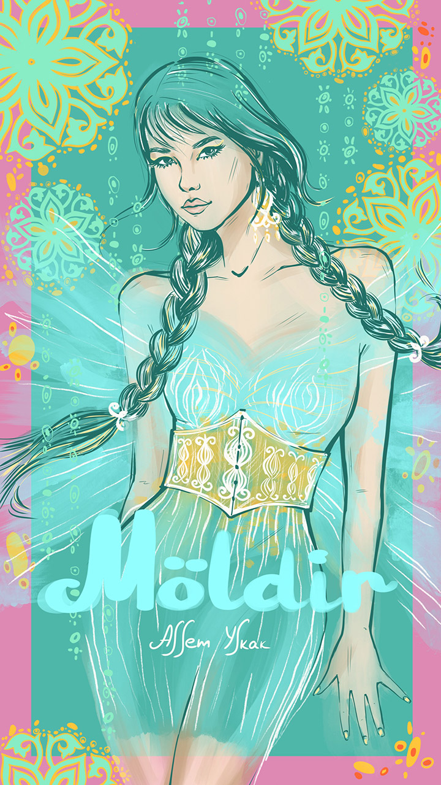
Аватар «Мөлдір»
С казахского языка переводится как «кристально чистая, прозрачная».
Она:
Изящная, грациозная, чуткая, мягкая, утонченная, ласковая и добрая. Легкая и честная в общении, что способствует глубоким и долгим отношениям. Мөлдір обладает отличными коммуникативными навыками, легко находит общий язык с разными людьми, ее называют «душой компании». Сильная, решительная, настойчивая в деле, достигает поставленных целей. Имеет ясные и аналитические умственные способности, принимает взвешенные решения. Также Мөлдір творческая личность с интересом к искусству и музыке.
Отличительные черты: Ее открытый, светлый и добродушный характер, который приносит много тепла и радости окружающим.
Avatar “Moldir”
Translated from Kazakh, it means “crystal clear, transparent”.
She is:
Elegant, graceful, sensitive, gentle, sophisticated, tender, and kind. Easy and honest in communication, which helps establish deep and long relationships. Moldir has excellent communication skills and can easily find common ground with different people, she is considered the "life of the party". She is strong, determined, and persistent in her actions and achieves set goals. She has clear analytical intellectual abilities and makes balanced decisions. Moldir is also a creative personality with interest in art and music.
Distinguishing features: Her open, bright, and kind-hearted character, which brings a lot of warmth and joy to those around her.
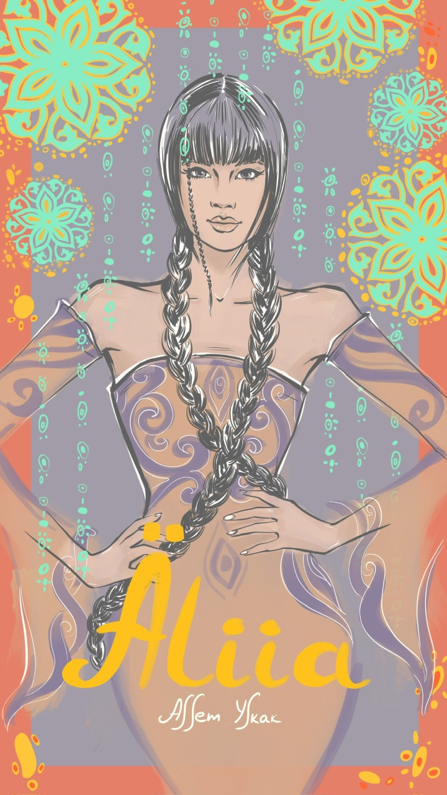
Аватар «Әлия»
Имя «Әлия» имеет арабское происхождение и означает «возвышенная», «выдающаяся».
Она:
Добрая, милая, открытая, общительная, чуткая, сострадательная и честная. Сильная и амбициозная, уверенная в себе и целеустремленная. У нее хороший вкус и чувство юмора. Успешно преодолевает жизненные трудности и добивается поставленных целей. Ценит семейные ценности и близкие отношения. Хозяйственная и практичная. Әлия любит проявлять заботу о других и быть активной в благотворительных действиях. Обладает лидерскими качествами. Она способна организовывать и вести группы людей к достижению общих целей.
Отличительные черты: Әлия — обладательница уникальных комбинаций интеллекта, решимости, красоты и доброты. У нее часто большие глаза с длинными ресницами.
Avatar “Aliia”
The name “Aliia” has Arabic origin and means “exalted”, “distinguished”.
She is:
Kind, sweet, open, communicative, sensitive, empathetic, and honest. Strong and ambitious, self-assured and goal-oriented. She has a good taste and sense of humor. Successfully overcomes life hardships and achieves set goals. Appreciates family values and close relationships. Domestic and practical. Aliia loves to care for others and be active in charitable activities. She demonstrates leadership qualities. She is capable of organizing and leading groups of people towards achieving common goals.
Distinguishing features: Aliia — the possessor of unique combination of intellect, determination, beauty, and kindness. She often has big eyes with long lashes.
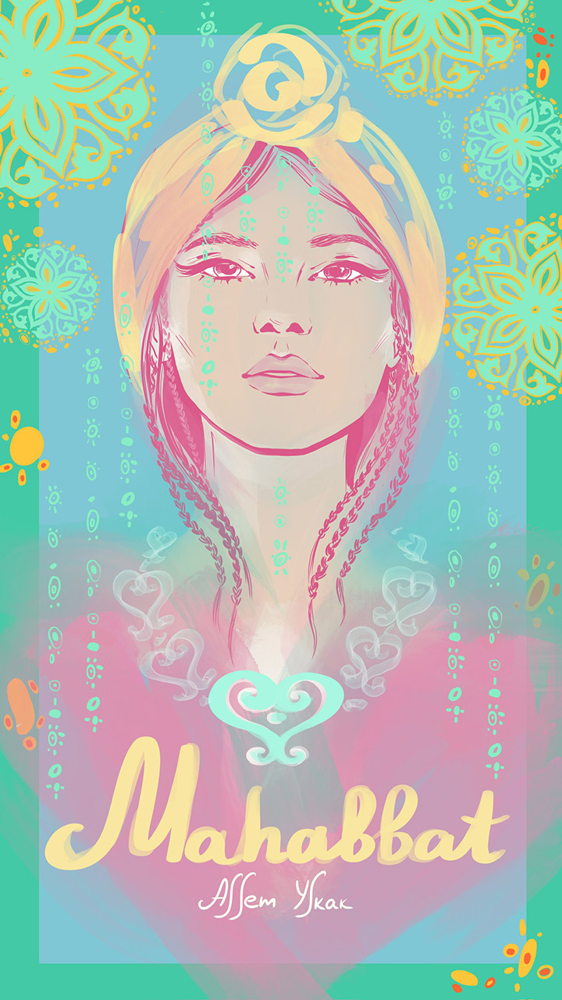
Аватар «Махаббат»
В переводе с казахского языка имя «Махаббат» означает «Любовь».
Она:
Веселая, нежная, милая, харизматичная и артистичная. Обладает открытым и отзывчивым характером, готова помогать и поддерживать других. Махаббат стремится к независимости, вкладывает силы в саморазвитие и реализацию себя. Она уверенна в себе, ответственная, смелая и любознательная. У нее сильная воля и решимость достигать своих целей. Часто занимает лидерские позиции. Также она очень чувствительная, эмоциональная и творческая личность. Ценит красоту, искусство, моду и книги. Ее яркая индивидуальность также проявляется через внешность и грамотную речь.
Отличительные черты: Уникальный и добрый характер Махаббат делает её источником любви и тепла для родных и окружающих.
Avatar “Mahabbat”
Translated from Kazakh, the name “Mahabbat” means “Love”.
She is:
Fun-loving, tender, sweet, charismatic, and dramatic. Has an open and responsive character, ready to help and support others. Mahabbat strives for independence, puts effort into self-development and self-realization. She is confident, responsible, brave, and curious. She has a strong will and determination to reach her goals, often taking on leadership roles. She is also very sensitive, emotional and a creative individual. Values beauty, art, fashion, and books. Her bright individuality is also manifested through her appearance and articulate speech.
Distinguishing characteristics: Mahabbat's unique and kind character makes her a source of love and warmth for her family and those around her.
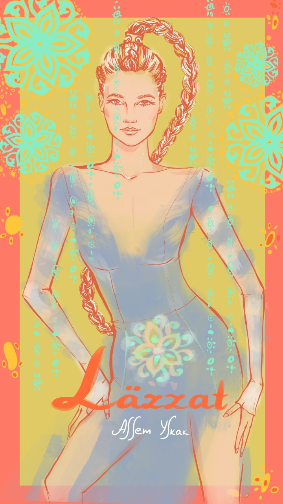
Аватар «Ләззат»
В переводе с казахского языка имя «Ләззат» означает «удовольствие, наслаждение».
Она:
Умная, веселая, энергичная, честная, добрая и позитивная, с прекрасным чувством юмора. Трудолюбивая, амбициозная, упрямая. Целеустремленность и незаурядный ум позволяет ей достигать любых поставленных целей. У нее отличные организаторские способности, сильный и волевой характер. Чем больше дел она делает, тем больше у нее энергии и авторитета.
Отличительные черты: Людей притягивает ее жизнерадостность и общительность. Рядом с ней радостно и легко.
Avatar «Lazzat»
Translated from the Kazakh language, the name «Lazzat» means «pleasure, enjoyment».
She is:
Smart, cheerful, energetic, honest, kind and positive, with a great sense of humor. Hardworking, ambitious, stubborn. Her focus and extraordinary mind allow her to achieve any set goals. She has excellent organizational skills, a strong and resolute character. The more work she does, the more energy and authority she has.
Distinguishing features: People are attracted by her joyfulness and sociability. It's joyful and easy to be around her.
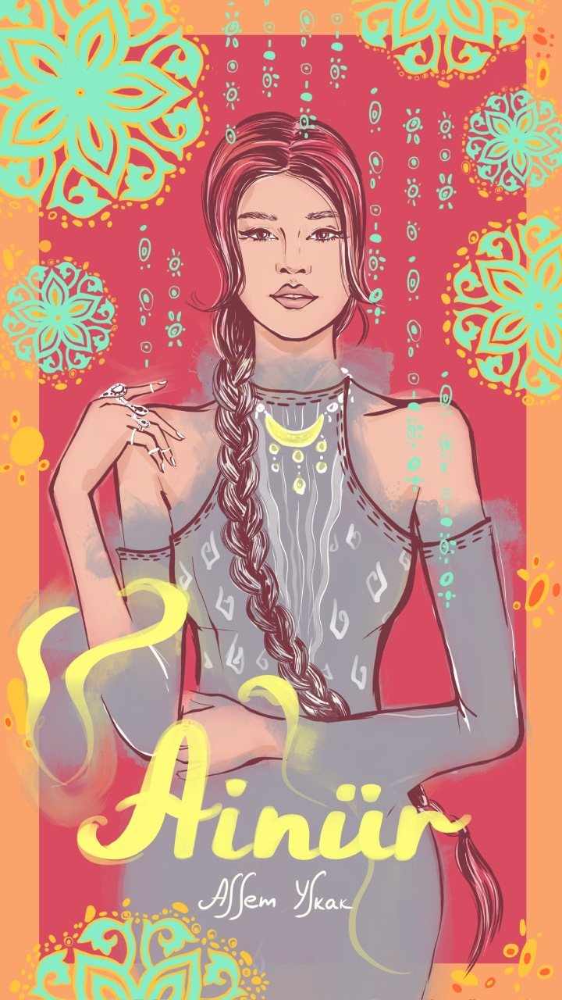
Аватар «Айнұр»
В переводе с казахского языка имя «Айнұр» означает «свет луны» или «луноликая».
Она:
Веселая, умная, прямая, ответственная, решительная и уверенная в себе. Айнұр очень общительная, активная и увлеченная личность с лидерским потенциалом. При этом чувствительная и эмпатичная, всегда поддержит мудрым советом, юмором и пониманием. У нее много друзей и связей. Она часто успешна и достигает своих целей. Также она очень творческая и хозяйственная. Любит уют и красивый интерьер у себя дома, ценит красоту и искусство.
Отличительная черта Айнұр это ее смелость. Она способна идти на риски и на авантюры, которые ее зажигают. С ней чаще могут случаться разные необычные и смешные истории.
С ней точно не соскучишься.
Avatar «Ainur»
Translated from the Kazakh language, the name «Ainur» means «moonlight» or «moon-faced».
She is:
Cheerful, smart, straightforward, responsible, determined and confident. Ainur is very sociable, active and passionate personality with leadership potential. At the same time, she is sensitive and empathetic, always supports with wise advice, humor and understanding. She has many friends and connections. She is often successful and achieves her goals. She is also very creative and frugal. Loves comfort and a beautiful interior at home, values beauty and art.
Ainur's distinctive feature is her courage. She is capable of taking risks and adventures that ignite her. With her, unusual and humorous stories can happen more frequently.
You will never get bored with her.